Everything the site draws by hand, in one place. Every file is an SVG (any size, any background), with PNG rasters beside it for slides and documents. Regenerate with node scripts/export_art.mjs; the drawings themselves live in src/art.js.
Use planet-nine (disc plus dashed ring) wherever the planet is named. The dashed ring is the point: it is a predicted body, not a seen one. The plain mark is for tiny sizes and inline text; mono takes currentColor for one-colour contexts; the lockup pairs it with a wordmark.
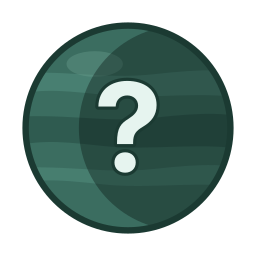
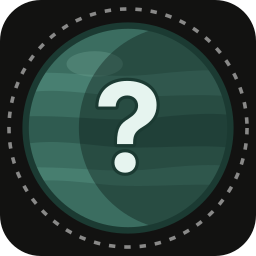
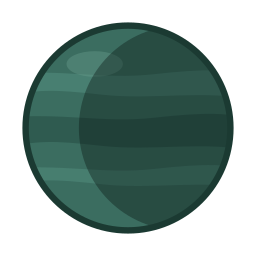
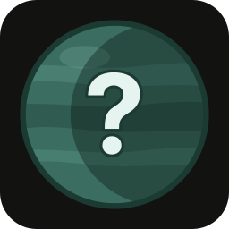
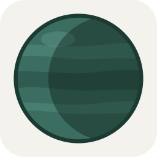
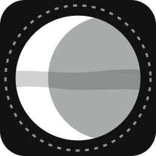
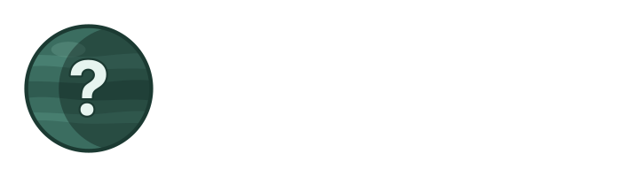
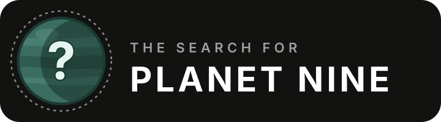
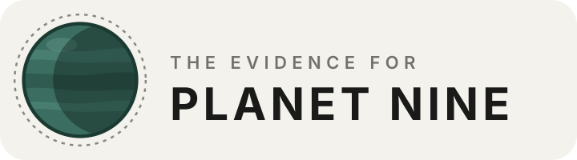
Small, in running text and on a light surface:
Deliberately simple: one disc, one outline, a band or two. Pluto gets a face. The Moon and Ceres are there for the planet-rules table.
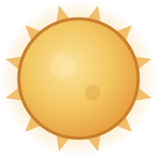
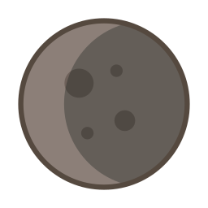
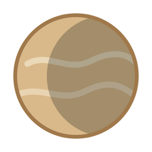
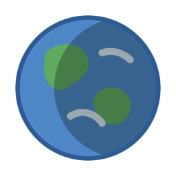
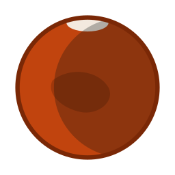
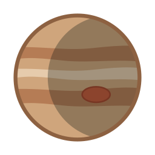
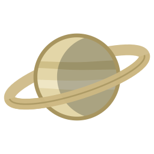
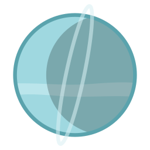
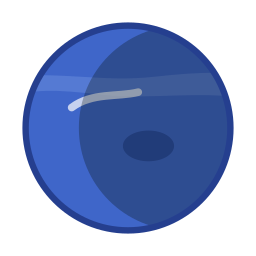
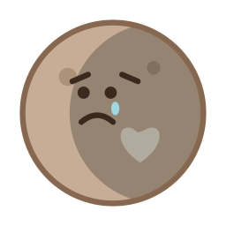
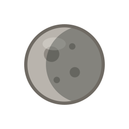
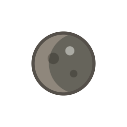
Three looks so a swarm reads as many different rocks. Pick by hashing the object id, as the distance chart does.
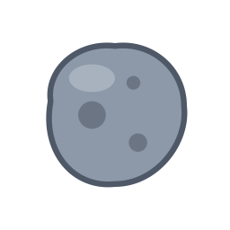
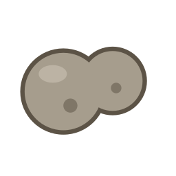
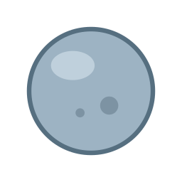
| Name | SVG | PNG sizes |
|---|---|---|
planet-nine | svg/planet-nine.svgsvg/planet-nine-dark.svgsvg/planet-nine-light.svg | 64px, 128px, 256px, 512px × none / dark / light |
planet-nine-mark | svg/planet-nine-mark.svgsvg/planet-nine-mark-dark.svgsvg/planet-nine-mark-light.svg | 64px, 128px, 256px, 512px × none / dark / light |
planet-nine-mono | svg/planet-nine-mono.svgsvg/planet-nine-mono-dark.svgsvg/planet-nine-mono-light.svg | 64px, 128px, 256px, 512px × none / dark / light |
planet-nine-lockup | svg/planet-nine-lockup.svgsvg/planet-nine-lockup-dark.svgsvg/planet-nine-lockup-light.svg | 64px, 128px, 256px, 512px × none / dark / light |
sun | svg/sun.svg | 64px, 256px |
mercury | svg/mercury.svg | 64px, 256px |
venus | svg/venus.svg | 64px, 256px |
earth | svg/earth.svg | 64px, 256px |
mars | svg/mars.svg | 64px, 256px |
jupiter | svg/jupiter.svg | 64px, 256px |
saturn | svg/saturn.svg | 64px, 256px |
uranus | svg/uranus.svg | 64px, 256px |
neptune | svg/neptune.svg | 64px, 256px |
pluto | svg/pluto.svg | 64px, 256px |
moon | svg/moon.svg | 64px, 256px |
ceres | svg/ceres.svg | 64px, 256px |
tno-1 | svg/tno-1.svg | 64px, 256px |
tno-2 | svg/tno-2.svg | 64px, 256px |
tno-3 | svg/tno-3.svg | 64px, 256px |
<!-- as a file -->
<img src="/art/svg/planet-nine.svg" width="40" alt="Planet Nine">
<!-- in the page, once main.js has injected the sprite -->
<svg class="art"><use href="#art-planet-nine"/></svg>
// in a chart
import { inline } from './art.js'
g.append('use').attr('href', '#art-sun').attr('width', 40).attr('height', 40)